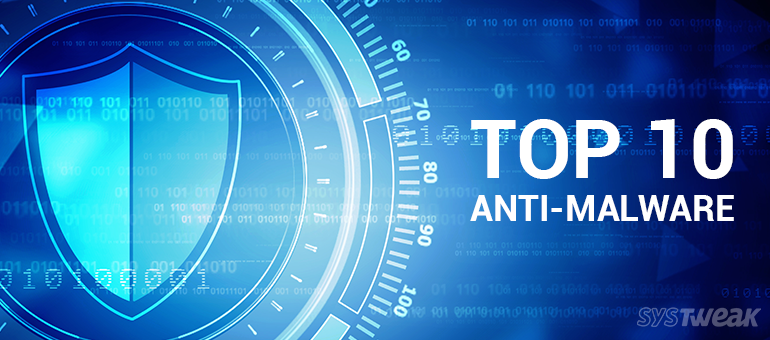
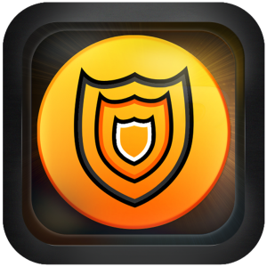
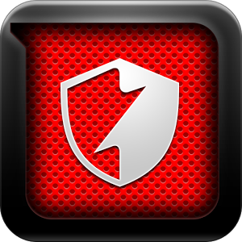
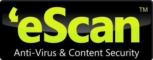

10 Best Anti–Malware Software of 2017 – Protect your PC from Viruses

Computer security has become a point of concern for individuals as well as small-big businesses. For ages, users have been told to protect their computers from attacks by running antivirus and antimalware software on it.
To make systems actually secure, anti-malware tools are required which identifies virus, malware, and other problematic files without any delay. Furthermore, there are various such software that claim to offer security yet their authenticity is doubtful. So, to make it little more clear we have got you 10 best anti-malware software. Read on to find the best anti-malware tool available for your system.
Best Anti–Malware Software for Windows 10, 8, 7 and Other Versions
1. Advanced System Protector

Advanced System Protector comprises of a powerful engine to scan and remove infectious files on a system. It is equipped with a huge database of spyware definitions to protect computer from malware, spyware and viruses. Furthermore, it has multiple scanning modes to match the needs of users and regularly provides updates which are free and automatic. Advanced System Protector is extremely light on system resources that runs in the background without interfering with other programs running on the PC. It successfully removes detected threats from the system to give users a smooth experience of working on PC and surfing internet.
2. G Data Antivirus
Developed by G DATA Software, G DATA Antivirus protects computer against online threats such as viruses, Trojans, spyware, phishing, and other malware. The software, additionally lends backup services that can be used to take backup of valuable data. This antimalware software is also equipped with special browser which prevents infections by keyloggers and other digital malware during online backing transactions. Further, users can limit the website content and its usage for their family. The tool is available in three versions namely G DATA Antivirus, G DATA Internet Security and G DATA Total Security. The former two have listed some features including 'behavior monitoring of files', 'instant protection for your email', etc. while the latter has advanced features such as 'increased performance with the integrated tuner' and 'protect your data via strong encryption'.
3. Bitdefender Antivirus

Next in the list of Best Anti–malware Software for Windows is Bitdefender Antivirus. It is the next antimalware tool on our list. The tool has two different versions for home and business users. It thoroughly scans system to detect viruses, malware and other infections. Bitdefender Antivirus use behavioral detection technique to detect suspicious activities on a system. This technique also ensures that instant action is taken for detect activity on a PC. Apart from this, users are protected from malicious websites that might hamper their data and other confidential information. Furthermore, the antimalware software is available in free and paid versions with variance in features for home and business users. It is an intuitive and handy tool to secure systems from vulnerabilities.
4. F- Secure Internet Security
F-Secure Internet Security allow users to secure themselves from malware and other malicious activities. The tool features virus protection, browsing protection and family protection. These ensure that the system isn't hacked by any malevolent program while having safer internet surfing. Additionally, Parental Control in the browsing mode wizard helps parents to filter the web content for their small children, and teenagers. One can even limit the time for which another user can browse the internet, and restrict the daily browsing time by setting a password. The main window shows the current status of the protection level against threats. Users can select tasks, restore removed files, scan for spyware, and filter e-mails from here. It consumes little memory of the system, however, other open applications run slower when F-Secure Internet Security is active.
5. E-SCAN ANTI-VIRUS

eScan Antivirus uses its own firewall to monitor inbound and outbound traffic to fight against threats. It offers real-time scanning feature to remove existing threats and whitelisting feature to represent good as well as malicious files. This antimalware software has two modes, namely Key Logger and Gamer mode. The key logger mode fosters the security by protecting passwords and other sensitive information against potential risks. On the other hand, Gamer mode gives full advantage of enjoying the games in full-screen without any interruptions. In all, eScan Antivirus is another secure antimalware software for you to defend your computer against infections.
6. WEBROOT INTERNET SECURITY PLUS
Webroot Internet Security Plus has integrated cloud technology to protect user data. The tool strengthens its protection against malware when users surf websites containing harmful content within them. The tool scans Windows registry, operating system files, and applications to display the list of threats and also blocks the detected viruses. Additionally, users can specify time within which the software runs and detects virus and malware on the PC. Another important feature it offers is heuristics analysis technique that ensure no infections are left on a system after scanning. Heuristics analysis technique which analyze file behavior and halts zero-day threat without delay. The software is available in free and pro versions for users to download.
7. AD-AWARE ANTI-VIRUS
Lavasoft offers Ad-Aware Anti-virus software that scans and detects malware and other such program on a system. The software works to give real-time, web, email and network protection. It uses two methods to scan systems, primarily, the traditional file-signature matching and other one is heuristic detection. File-signature verification includes testing of files through Windows File Protection (WFP) and System File Checker (SFC). The tool has designed with several features which lends tightknit security and perhaps ensure that no infection can ever intervene. It is flexible software which takes special care of online security through Download Guard. Download Guard notifies users on download of malicious files. The other features of the tool include Process Watch application to monitor running processes, AutoStart Manager for controlling programs launched at startup of the system, etc.
8. Emsisoft Emergency Kit
Emsisoft Emergency Kit consists of Emergency Kit Scanner that allows users to detect infections and other malicious programs. It has three types of scans that are designed to tailor to any situation. These include Quick Scan, Malware Scan and Custom Scan. Users can personalize scanning on their system via Custom Scan, which includes scan for active Rootkits, malware and its traces, PUPs, compressed archives and NTFS Alternate Data Streams. This antimalware tool is another nifty tool available for Windows users, in order to protect their systems from malicious threats.
9. ESET SMART SECURITY 7
ESET Smart Security is another Best Anti–malware Software for Windows. It is the easiest internet security suit to use. The tool is equipped with all essential features that protect computers from online threats, such as viruses, malware, and malicious websites. Apart from this, it doesn't support any other exclusive feature. Furthermore, constant usage of the tool leads to slower computer and its functions. However, the tool has intuitive interface and weekday phone support and live chat enabled. These elements make it easier to use the software.
10. HijackThis
HijackThis scans computer completely and returns an enormous log file. It does not specify that an application or program is malicious. Instead, it generates a list of those programs which can be tampered with by spyware, malware, or other malicious programs. Users can upload the log file to a security forum and ask the volunteers to identify the possible threatening components for them. Users can also upload log file on HijackThis.de, which is a web-based HijackThis log reader. It will scan those log files and will provide links to articles on how to remove the malware found in the computer.